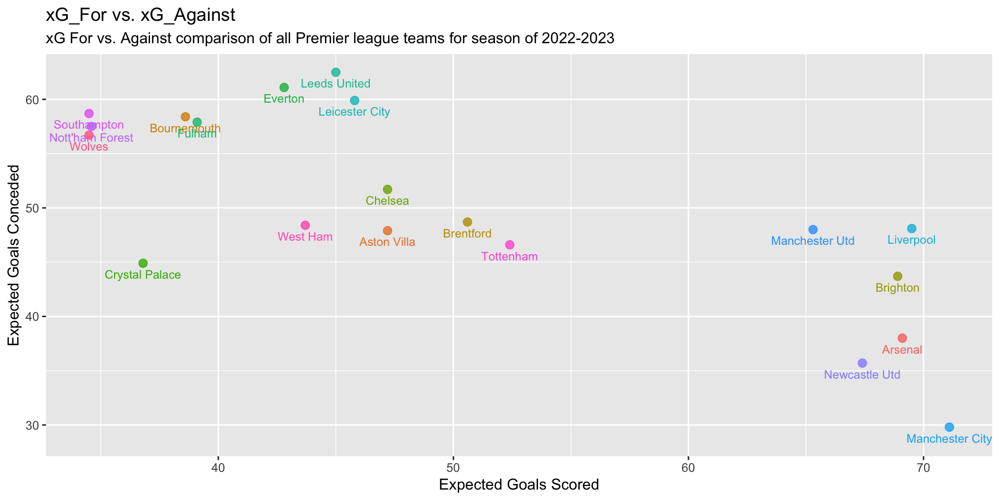
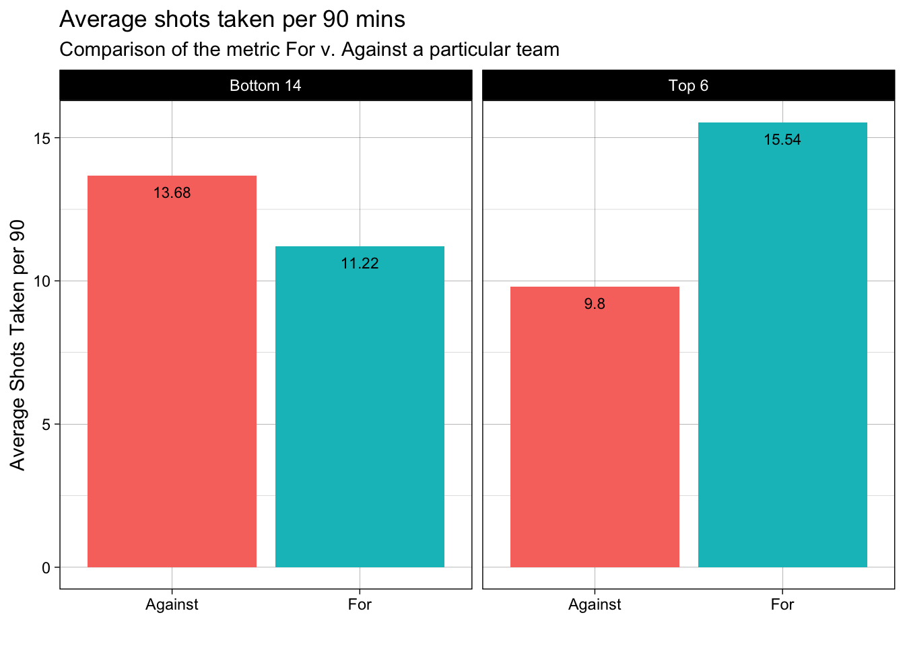
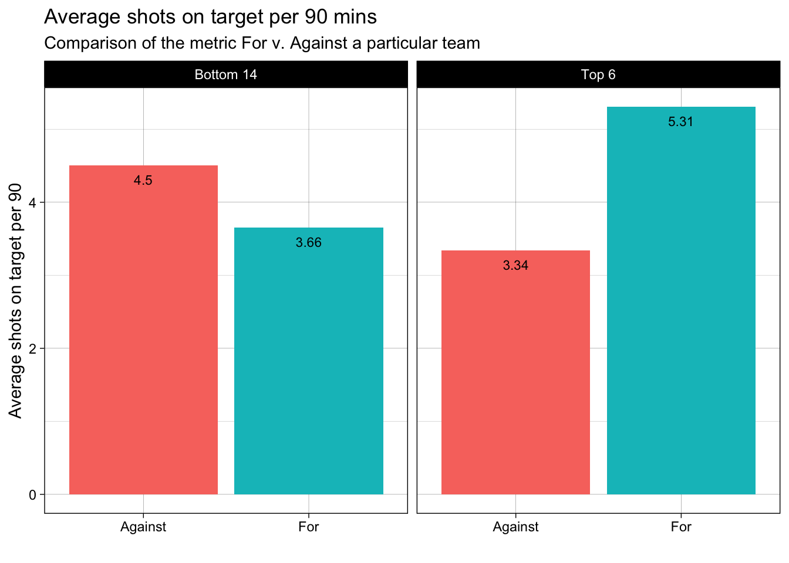
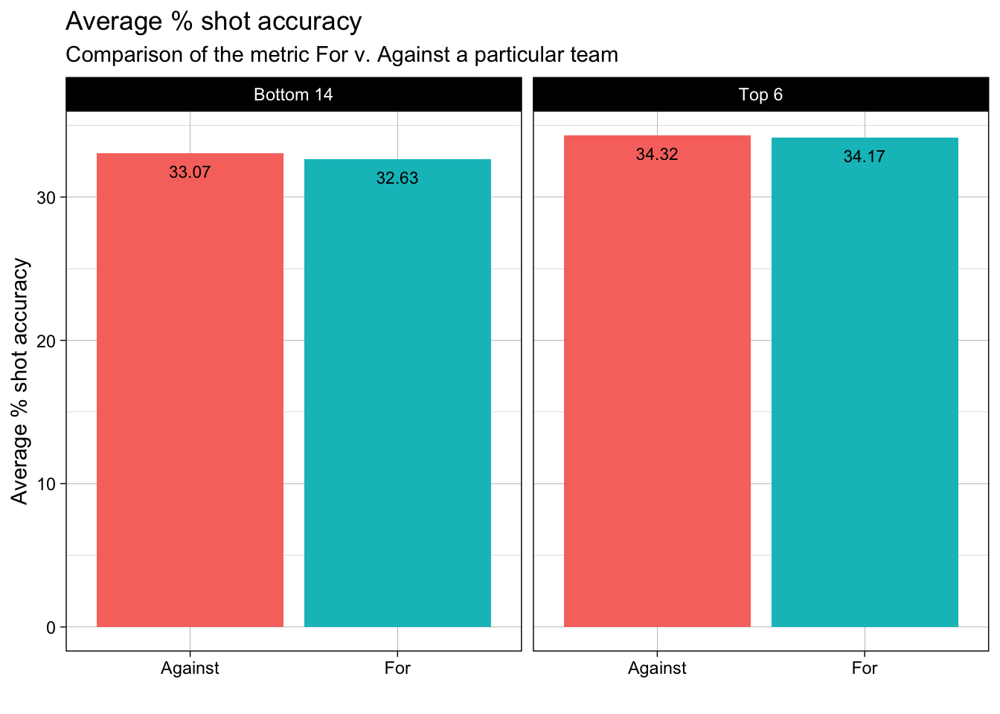
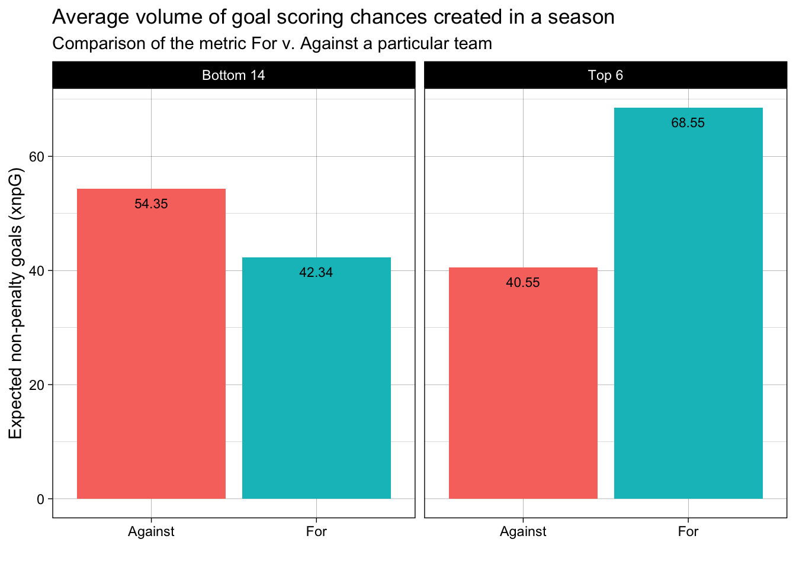
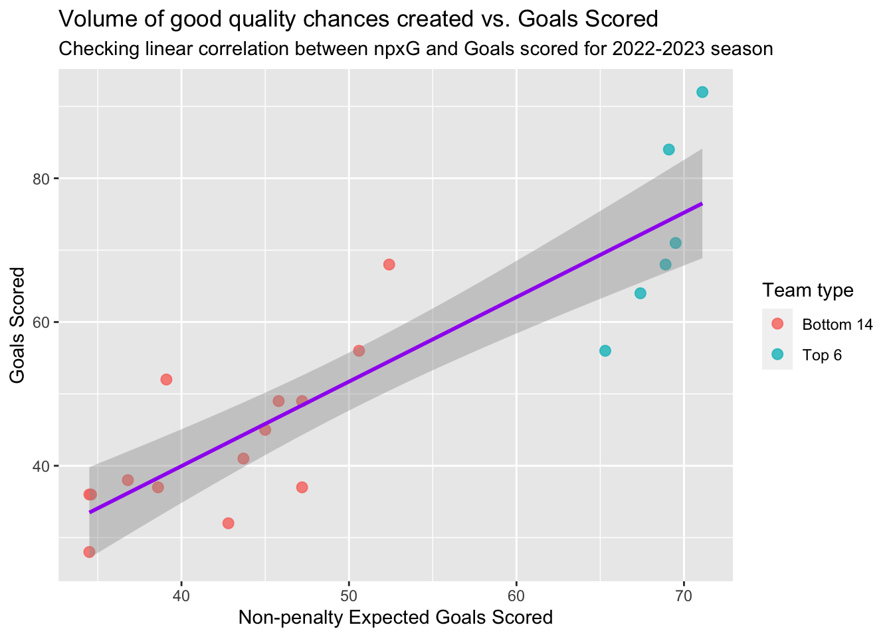
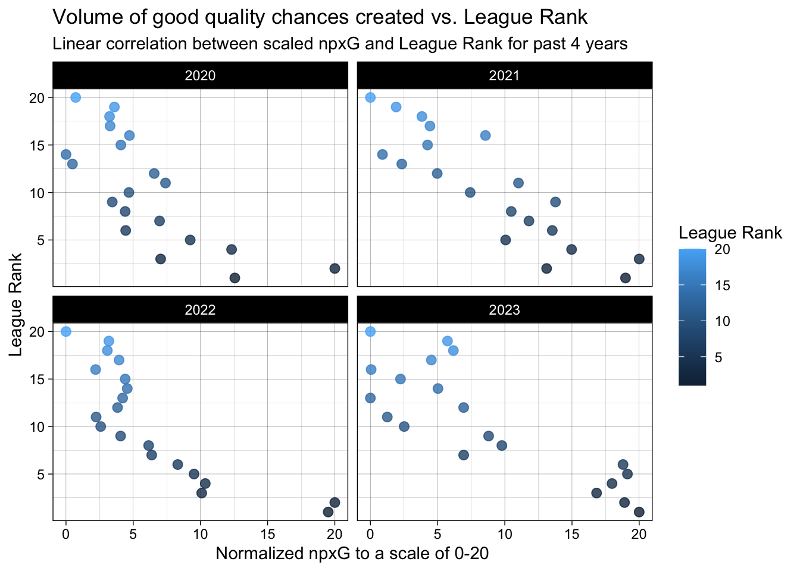
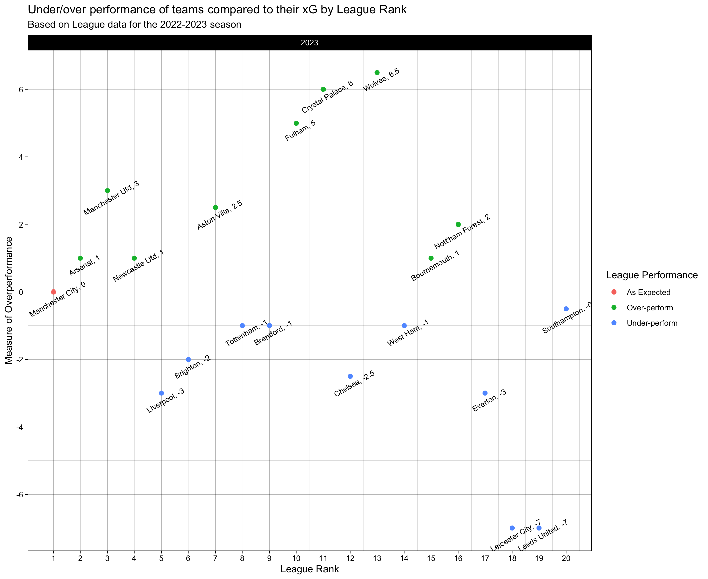

Code
prem_team_2023_shooting <- fb_season_team_stats(country = "ENG", gender = "M", season_end_year = "2023", tier = "1st", stat_type = "shooting")Prasann Desai
July 13, 2023
Until a decade and a half ago, recording data points regarding key events in soccer was a manual process. This limited the range of analysis and the variety of data attributes. Today, with the usage of advanced technology, hundreds of attributes describing a game are being recorded in real-time. This has enabled a wide range of research in the field of soccer analytics and led to the emergence of various soccer data aggregators like StatsBomb, FBref, Understat, Fotmob, etc. In this project, we will be using the data from these aggregators using the worldfootballR package in R. This package has been created by Jason Zivkovic that enables users to conveniently access data belonging to the above-mentioned aggregators in R.
The goal of the project will be to find performance attributes that best predict success in the game. We would want to see the following aspects:
The xG (expected goals) metric is a statistical measure used in soccer to assess the quality of goal-scoring opportunities. It provides a numerical value that represents the likelihood of a shot resulting in a goal based on various factors.
In soccer, teams create scoring opportunities by taking shots on goal from different positions on the field. The xG metric takes into account factors such as the distance from the goal, the angle of the shot, whether it was taken with the dominant foot or weak foot, the number of defenders between the shooter and the goal, and other variables. These factors are analyzed using historical data to determine the probability of a shot being converted into a goal.
For example, if a shot has an xG value of 0.4, it means that, on average, a similar chance would result in a goal 40% of the time. If a team consistently creates high xG opportunities but fails to convert them into goals, it suggests that they may have been unlucky or that the opposing goalkeeper made exceptional saves. Conversely, if a team scores more goals than their xG suggests, it could indicate that they have been particularly clinical or have taken advantage of low-quality chances.
The xG metric provides a valuable tool for evaluating the effectiveness of teams and individual players. It helps to assess their ability to create and convert scoring opportunities, as well as providing insights into the overall performance of a team’s offense.
Non-penalty xG (expected goals) metric in soccer measures the likelihood of a shot resulting in a goal, excluding “penalty kicks” (important distinction from xG). It helps evaluate a team/player’s ability to create and convert scoring opportunities from “open play”.
This dataset allows us to obtain soccer game/team/player data with various attributes. The attributes are both categorical and numerical. The attributes describing a game are goals scored by the home/away team, assists, game result, corners taken, shots attempted, etc. Similar attributes are also recorded at a team and player level. The dataset also contains some advanced attributes like xG and xA that are widely accepted in the soccer analytics industry to describe the quality of actions of players/teams in quantitative terms. We will be making use of xG and related stats to determine if it is a good indicator of success (better points earned in the league, more goals scored, etc.). For simplicity, we will be using the stats of the 1st tier of English Premier League Football for our analysis.
This is a sample dataset call. Further in the project, we could change a couple of parameters in the dataset call for comparative analysis, etc. The two main dataset calls we use in this project are: fb_season_team_stats(…., stat_type = “shooting”) and fb_season_team_stats(…., stat_type = “league_table”).
[1] "Competition_Name" "Gender" "Country"
[4] "Season_End_Year" "Squad" "Team_or_Opponent"
[7] "Num_Players" "Mins_Per_90" "Gls_Standard"
[10] "Sh_Standard" "SoT_Standard" "SoT_percent_Standard"
[13] "Sh_per_90_Standard" "SoT_per_90_Standard" "G_per_Sh_Standard"
[16] "G_per_SoT_Standard" "Dist_Standard" "FK_Standard"
[19] "PK_Standard" "PKatt_Standard" "xG_Expected"
[22] "npxG_Expected" "npxG_per_Sh_Expected" "G_minus_xG_Expected"
[25] "np:G_minus_xG_Expected"Before we dive deeper into any particular facet of team or individual performances, we must first look into some standard soccer statistics and do some comparative analysis to set the right foundations.
Firstly, it would be a good idea to have an identifier for the top performing teams vs the rest. A common practice is to view the teams based on their xGFor and xGAgainst on a grid and choose the teams on the bottom right of that graph. The graph “xG_For vs. xG_Against” below does just that.
# Pre-processing
# selecting the required columns
prem_2023_shooting_1 <- select(prem_team_2023_shooting, Squad, Team_or_Opponent, npxG_Expected)
prem_2023_shooting_1 <- mutate(prem_2023_shooting_1, Squad = case_when(str_detect(Squad, "vs ") ~ str_split(Squad, "vs ", simplify = TRUE)[,2],
TRUE ~ as.character(Squad)
))
# Using the pivot_wider function to pivot the dataset
prem_2023_shooting_pivoted <- pivot_wider(prem_2023_shooting_1, names_from = "Team_or_Opponent", values_from = "npxG_Expected")
prem_2023_shooting_pivoted <- rename(prem_2023_shooting_pivoted, xG_For = team, xG_Against = opponent)# Building a scatter plot of xG_For and xG_Against
ggplot(prem_2023_shooting_pivoted,
aes(x = xG_For,
y = xG_Against,
col = Squad
)) +
geom_text(aes(y = xG_Against - 1, label = Squad), size = 3) +
geom_point(size = 2.5, alpha = 0.8) +
labs(x = "Expected Goals Scored",
y = "Expected Goals Conceded",
title = "xG_For vs. xG_Against",
subtitle = "xG For vs. Against comparison of all Premier league teams for season of 2022-2023") +
theme(legend.position = "none")
You’ll see that there is group of 6 teams that have separated themselves from the rest - They are Arsenal, Manchester City, Liverpool, Brighton, Newcastle Utd & Manchester Utd. Interestingly, these were the exact 6 teams that finished in the top 6 of the 2022-23 Premier League Season! This, in a way, validates our usage of xG to identify top-performing teams. Going forward, we will identify these 6 teams as the “Top 6” and rest of the teams as “Bottom 14”.
prem_team_2023_shooting <- mutate(prem_team_2023_shooting, `Team type` = case_when(str_detect(Squad, "Arsenal") ~ "Top 6",
str_detect(Squad, "Manchester City") ~ "Top 6",
str_detect(Squad, "Liverpool") ~ "Top 6",
str_detect(Squad, "Brighton") ~ "Top 6",
str_detect(Squad, "Newcastle Utd") ~ "Top 6",
str_detect(Squad, "Manchester Utd") ~ "Top 6",
TRUE ~ "Bottom 14"
))
prem_team_2023_shooting <- mutate(prem_team_2023_shooting, Team_or_Opponent = case_when(str_detect(Team_or_Opponent, "opponent") ~ "Against",
str_detect(Team_or_Opponent, "team") ~ "For",
TRUE ~ "NA"
))# Function to plot comparisons on various metrics
plot_bar_facet_avg <- function(input_df, category_var, facet_var, measure, chart_title, subtitle, x_axis_label, y_axis_label) {
input_df_grouped <- group_by(input_df, across(all_of(category_var)), across(all_of(facet_var))) %>%
summarise(Average_measure = mean(.data[[measure]], na.rm = TRUE))
ggplot(input_df_grouped, aes(x = .data[[category_var]], y = Average_measure, fill = .data[[category_var]])) +
geom_bar(size = 1, stat = "identity", show.legend = FALSE) +
facet_wrap(~.data[[facet_var]]) +
labs(title = chart_title,
subtitle = subtitle,
x = x_axis_label,
y = y_axis_label
) +
geom_text(aes(label = round(Average_measure,2)),
color = "black",
size = 3,
vjust = 2
) +
theme_linedraw()
}plot_bar_facet_avg(prem_team_2023_shooting, category_var = "Team_or_Opponent", facet_var = "Team type", measure = "Sh_per_90_Standard",
chart_title = "Average shots taken per 90 mins", subtitle = "Comparison of the metric For v. Against a particular team",
x_axis_label = "", y_axis_label = "Average Shots Taken per 90"
)
In the above plot, we observe that, on an average the Top 6 teams take a lot more shots (compare the ‘For’ columns. Shots ‘For’ basically means Shots taken/attempted) per 90mins as compared to the Bottom 14. Also, we can see that the shots conceded (compare the ‘Against’ columns. Shots ‘Against’ basically means Shots conceded) by Top 6 teams are far lesser than the Bottom 14 teams. As a result, we can infer that the Top 6 teams create a lot more attacking threat and exhibit much better defensive capability.
plot_bar_facet_avg(prem_team_2023_shooting, category_var = "Team_or_Opponent", facet_var = "Team type", measure = "SoT_per_90_Standard",
chart_title = "Average shots on target per 90 mins", subtitle = "Comparison of the metric For v. Against a particular team",
x_axis_label = "", y_axis_label = "Average shots on target per 90"
)
plot_bar_facet_avg(prem_team_2023_shooting, category_var = "Team_or_Opponent", facet_var = "Team type", measure = "SoT_percent_Standard",
chart_title = "Average % shot accuracy", subtitle = "Comparison of the metric For v. Against a particular team",
x_axis_label = "", y_axis_label = "Average % shot accuracy"
)
In the above two plots, we observe that, on an average the Top 6 teams have more shots on target (shots that end up within/on the goal posts are considered as shots on target. Here, the target is the ‘goalpost’.) per 90mins as compared to the Bottom 14. Also, we can see that the shot accuracy (shots on target / total shots taken/attempted) of the Top 6 teams is not so different than the Bottom 14 teams. As a result, from the above 3 plots, we can infer that what seperates the Top 6 teams v. Bottom 14 teams is the volume of shots taken. This insight can also be extended to individual player performances. A similar analysis for player performance was done by Omar Chaudhuri from “Twenty First Group” that stated that statistically what separates top-tier players like Ronaldo, Messi is the the volume of shots that they attempt every match from high goal probability positions (basically, high xG).
plot_bar_facet_avg(prem_team_2023_shooting, category_var = "Team_or_Opponent", facet_var = "Team type", measure = "npxG_Expected",
chart_title = "Average volume of goal scoring chances created in a season",
subtitle = "Comparison of the metric For v. Against a particular team",
x_axis_label = "", y_axis_label = "Expected non-penalty goals (xnpG)"
)
After establishing the importance of producing high xG, the above plot is just to substantiate the fact that over the course of the entire season, the difference in the Top 6 teams and Bottom 14 teams in terms of quality of goal scoring attempts created is pretty significant. For coaches and teams around the world, it is like a north-star metric that lies at the heart of all the new tactics/strategies that are devised to achieve higher league positions over a season. Interestingly, xG accumulated over a season/year at a player level can also be used for new player purchase strategies – there are hidden gems with under-rated goal-scoring abilities across the world that sometimes get overshadowed by their teams’ bad luck/under-performance but statistically have high individual xGs.
# Building a x-y plot of npxG_Expected and Goals scored
prem_team_2023_shooting_for <- filter(prem_team_2023_shooting, Team_or_Opponent == "For")
ggplot(prem_team_2023_shooting_for,
aes(x = npxG_Expected,
y = Gls_Standard,
col = `Team type`
)) +
geom_point(size = 2.5, alpha = 0.8) +
stat_smooth(method = "lm", formula = 'y~x', col = "purple") +
labs(x = "Non-penalty Expected Goals Scored",
y = "Goals Scored",
title = "Volume of good quality chances created vs. Goals Scored",
subtitle = "Checking linear correlation between npxG and Goals scored for 2022-2023 season"
) +
theme()
In the above plot, it is intuitive to infer that there is a positive correlation between Non-Penalty xG and Goals scored i.e. Higher volume of goal scoring opportunities created lead to more number of goals. We know that, more goals scored lead to more wins. Consequently, the teams with higher Non-Penalty xG lead to higher league positions (See how the Top 6 teams separate themselves from the rest). Statistically, there is also an understanding in the soccer analytics industry that higher Non-Penalty xG is a better measure of team performance despite of the eventual league position. To validate this viewpoint, let’s now look at the trend of Non-Penalty xG / Regular xG vs League Performance (League Position) over the past 4 years.
# Pre-processing data for past 4 years
# 2023 Data
pre_processed_shooting_table_df_for <- function(year) {
prem_team_2023_shooting <- fb_season_team_stats(country = "ENG", gender = "M", season_end_year = year, tier = "1st", stat_type = "shooting")
prem_team_2023_shooting <- mutate(prem_team_2023_shooting, Squad = case_when(str_detect(Squad, "vs ") ~ str_split(Squad, "vs ", simplify = TRUE)[,2],
TRUE ~ as.character(Squad)
))
prem_team_2023_shooting <- mutate(prem_team_2023_shooting, Team_or_Opponent = case_when(str_detect(Team_or_Opponent, "opponent") ~ "Against",
str_detect(Team_or_Opponent, "team") ~ "For",
TRUE ~ "NA"
))
prem_2023_league_table <- fb_season_team_stats(country = "ENG", gender = "M", season_end_year = year, tier = "1st", stat_type = "league_table")
combined_df <- left_join(prem_team_2023_shooting, prem_2023_league_table, by = "Squad")
combined_df <- filter(combined_df, Team_or_Opponent.x == "For")
combined_df <- mutate(combined_df, npxG_Expected_norm = rescale(npxG_Expected, to = c(0,20)))
combined_df <- mutate(combined_df, xGD_norm = rescale(xGD, to = c(0,20))) %>% arrange(desc(npxG_Expected)) %>% mutate(npxG_Expected_Rank = rank(desc(npxG_Expected)))
combined_df
}prem_stats_2020 <- pre_processed_shooting_table_df_for("2020")
prem_stats_2021 <- pre_processed_shooting_table_df_for("2021")
prem_stats_2022 <- pre_processed_shooting_table_df_for("2022")
prem_stats_2023 <- pre_processed_shooting_table_df_for("2023")
final_df <- rbind(prem_stats_2020, prem_stats_2021, prem_stats_2022, prem_stats_2023)# Building a x-y plot of npxG_Expected and League Rank
ggplot(final_df,
aes(x = npxG_Expected_norm,
y = Rk,
color = Rk
)) +
facet_wrap(~`Season_End_Year.y`, ncol = 2) +
geom_point(size = 2.5, alpha = 0.8) +
labs(x = "Normalized npxG to a scale of 0-20",
y = "League Rank",
title = "Volume of good quality chances created vs. League Rank",
subtitle = "Linear correlation between scaled npxG and League Rank for past 4 years",
color = "League Rank"
) +
theme_linedraw()
The y-axis represents the League Rank that ranges from 1-20. To ensure that the x-axis is also on the same range (1-20), we normalize the npxG metric (to 0-1 range) and scale it to the required range (to 0-20 range). The relative difference and order based on the metric between the teams remains the same after this rescaling process.
From the above two plots, we can conclude that over the last 4 years there is a significant correlation between better league positions and higher non-penalty/regular xG produced by the teams. As you can observe, there are some teams/instances where there is a deviation from the expected linear trend. This deviation is attributed to teams that under-perform (goals scored < xG) their xG which essentially means that over the course the season, these teams were unlucky at converting the goal scoring opportunities to actual goals. Although goals win matches and the final league positions are the most important, we must be mindful of this nuance. Teams sometimes produce high xG but end up at lower league positions. We must not be quick to conclude that such teams are poor overall.
Interesting fact: At the end of 2014-15 season, a german soccer club and regular top-6 finishing team called “Borussia Dortmund” sacked their coach Jurgen Klopp because they finished much lower in the table. But, statistically, on the basis of xG, Dortmund was performing like a top-6 team even that season! Seems like they were just unlucky and hastily ended up sacking one the best coaches in world football!!
Based on this knowledge, let’s look in the next section, which teams were more unlucky than others.
Let’s refer again to the following excerpt from the Background information section above:
“If a team consistently creates high xG opportunities but fails to convert them into goals, it suggests that they may have been unlucky or that the opposing goalkeeper made exceptional saves. Conversely, if a team scores more goals than their xG suggests, it could indicate that they have been particularly clinical or have taken advantage of low-quality chances.”
We calculate the rank of the teams based on their accumulated npxG and call that metric as “npxG_Expected_Rank”. The team with the highest npxG has “npxG_Expected_Rank” = 1. In simpler terms, we can say that “npxG_Expected_Rank” is the expected league rank solely based on the teams’ npxG accumulated over the course of a season. Based on the this information, we define “Over-performance” as the difference between the Expected League Rank and Actual League Rank. For example, if for Team A, npxG_Expected_Rank = 10 and League Rank = 5, then we say that the team eventually over-performed by 5 league positions.
Now, let’s look at the teams that couldn’t secure points despite performing well i.e. “Unlucky”
# Plot to see under/over performance of teams compared to their xG
# final_df
final_df_v2 <- filter(final_df, `Season_End_Year.y` == "2023") #| `Season_End_Year.y` == "2022")
final_df_v2 <- mutate(final_df_v2, `Team type` = case_when(Rk < 7 ~ "Top 6",
TRUE ~ "Bottom 14"
))
final_df_v2 <- mutate(final_df_v2, Over_perform_flag = case_when((npxG_Expected_Rank - Rk) > 0 ~ "Over-perform",
(npxG_Expected_Rank - Rk) < 0 ~ "Under-perform",
TRUE ~ "As Expected"
))
ggplot(final_df_v2, aes(x = Rk, y = npxG_Expected_Rank - Rk, color = Over_perform_flag)) +
geom_point(size = 2) +
facet_wrap(~`Season_End_Year.y`, ncol = 1) +
#scale_fill_manual(values = c("Over-perform" = "green", "Under-perform" = "red", "As Expected" = "yellow")) +
labs(x = "League Rank",
y = "Measure of Overperformance",
title = "Under/over performance of teams compared to their xG by League Rank",
subtitle = "Based on League data for the 2022-2023 season",
color = "League Performance"
) +
scale_x_continuous(breaks = c(seq(1, 20, by=1))) +
scale_y_continuous(breaks = c(seq(-10, 10, by=2))) +
geom_text(aes(label = paste0(Squad, ", ", npxG_Expected_Rank - Rk)),
color = "black",
size = 3,
vjust = 2,
angle = 30
) +
theme_linedraw()
In the above plot, the teams have been arranged based on their league position from left to right. We have calculated a measure called “npxG_Expected_Rank” that is analogous to expected rank based on npxG alone. The y-axis of the plot is the difference between the actual rank and the expected rank. A couple of interesting things to look at here – Fulham, Crystal Palace and Wolves have all over-performed this season. This means that, there are teams below them in the table that have actually performed better than them in the 2023 season. If luck had gone out of the window, they might have found themselves in the relegation battle. Obviously, over-performance of some teams are also a factor in under-performance of other teams. Interestingly, we need to look at the two teams that have highly under-performed: Leicester City and Leeds United. Unfortunately and unluckily, despite their relatively better performances, these teams ended up getting relegated from the league this season and their managers/coaches getting sacked. A deviation for 7 league positions from the expected league position is worth noting, and the teams should have enough confidence in them next season to get promoted back to the Premier league.
From the analysis above, we can conclude that, on a high level, Expected Goals (xG) is a powerful measure to gauge the on-field performances of the soccer teams. The best teams/players in a season produce higher xG and the teams higher up the league table are usually the ones with the relatively better xG scores. The difference in the expected league rank based on npxG and the actual league rank is also a good indicator the amount of luck involved in the final league position of a team.
A few limitations of using the current version of xG are: Firstly, xG does not take into account contextual factors such as the skill level of the shooter, the goalkeeper, or the defensive positioning. It primarily relies on historical data and average probabilities, which may not fully capture the unique circumstances of each shot. Secondly, xG relies on available tracking data, which may vary in quality and availability across different leagues, teams, or matches. Incomplete or inaccurate data can impact the accuracy of xG calculations. Lastly, xG focuses on the attacking side and does not consider defensive factors that may affect shot outcomes, such as defensive pressure, positioning, or tactics. This omission can result in an incomplete picture of the overall dynamics of a game.
Despite these drawbacks, xG is still a useful tool for evaluating goal-scoring opportunities and determining how well players and teams create and take advantage of opportunities. For a thorough understanding of the game, its limitations should be acknowledged and taken into account alongside other performance indicators and qualitative analysis.
[1] Source of the Dataset: https://jaseziv.github.io/worldfootballR/
[2] R-programming language: https://www.r-project.org/
[3] Course Textbook: https://r4ds.had.co.nz/
[4] Concept of Expected Goals: https://statsbomb.com/soccer-metrics/expected-goals-xg-explained/
---
title: "Homework 3"
author: "Prasann Desai"
description: "Reading in Data"
date: "7/13/2023"
format:
html:
toc: true
toc-depth: 3
toc-title: Contents
toc-location: left
number-sections: true
number-depth: 3
code-copy: true
code-fold: true
code-tools: true
categories:
- Final Project
- Prasann Desai
- worldfootballR
---
```{r}
#| label: setup
#| warning: false
#| message: false
#| include: false
library(tidyverse)
library(purrr)
library(ggplot2)
library(scales)
knitr::opts_chunk$set(echo = TRUE, warning=FALSE, message=FALSE)
# to allow us to install packages from github and eventually install/load up the dataset.
# install.packages("devtools")
# devtools::install_github("JaseZiv/worldfootballR", ref = "main")
library(worldfootballR)
```
# Introduction
Until a decade and a half ago, recording data points regarding key events in soccer was a manual process. This limited the range of analysis and the variety of data attributes. Today, with the usage of advanced technology, hundreds of attributes describing a game are being recorded in real-time. This has enabled a wide range of research in the field of soccer analytics and led to the emergence of various soccer data aggregators like StatsBomb, FBref, Understat, Fotmob, etc. In this project, we will be using the data from these aggregators using the *worldfootballR* package in R. This package has been created by Jason Zivkovic that enables users to conveniently access data belonging to the above-mentioned aggregators in R.
The goal of the project will be to find performance attributes that best predict success in the game. We would want to see the following aspects:
- What are the best teams/players good at? We will compare their aggregate statistics like goals, xG, Goal difference, etc.
- Does higher xG (Expected Goals) correspond to higher league position? Any trends over years?
- Which team has been the most unlucky? Here, we will analyse the difference between XG and Actual goals to see which teams couldn't secure points despite performing well.
# Expected Goals (xG) philosophy
The xG (expected goals) metric is a statistical measure used in soccer to assess the quality of goal-scoring opportunities. It provides a numerical value that represents the likelihood of a shot resulting in a goal based on various factors.
In soccer, teams create scoring opportunities by taking shots on goal from different positions on the field. The xG metric takes into account factors such as the distance from the goal, the angle of the shot, whether it was taken with the dominant foot or weak foot, the number of defenders between the shooter and the goal, and other variables. These factors are analyzed using historical data to determine the probability of a shot being converted into a goal.
For example, if a shot has an xG value of 0.4, it means that, on average, a similar chance would result in a goal 40% of the time. If a team consistently creates high xG opportunities but fails to convert them into goals, it suggests that they may have been unlucky or that the opposing goalkeeper made exceptional saves. Conversely, if a team scores more goals than their xG suggests, it could indicate that they have been particularly clinical or have taken advantage of low-quality chances.
The xG metric provides a valuable tool for evaluating the effectiveness of teams and individual players. It helps to assess their ability to create and convert scoring opportunities, as well as providing insights into the overall performance of a team's offense.
## Non-penalty xG (npxG)
Non-penalty xG (expected goals) metric in soccer measures the likelihood of a shot resulting in a goal, excluding "penalty kicks" (important distinction from xG). It helps evaluate a team/player's ability to create and convert scoring opportunities from "open play".
# Data for this project
This dataset allows us to obtain soccer game/team/player data with various attributes. The attributes are both categorical and numerical. The attributes describing a game are goals scored by the home/away team, assists, game result, corners taken, shots attempted, etc. Similar attributes are also recorded at a team and player level. The dataset also contains some advanced attributes like xG and xA that are widely accepted in the soccer analytics industry to describe the quality of actions of players/teams in quantitative terms. We will be making use of xG and related stats to determine if it is a good indicator of success (better points earned in the league, more goals scored, etc.). For simplicity, we will be using the stats of the 1st tier of English Premier League Football for our analysis.
This is a sample dataset call. Further in the project, we could change a couple of parameters in the dataset call for comparative analysis, etc. The two main dataset calls we use in this project are: fb_season_team_stats(...., stat_type = "shooting") and fb_season_team_stats(...., stat_type = "league_table").
```{r}
prem_team_2023_shooting <- fb_season_team_stats(country = "ENG", gender = "M", season_end_year = "2023", tier = "1st", stat_type = "shooting")
```
```{r}
colnames(prem_team_2023_shooting)
```
## Attribute Information
1) Competition_Name (str, categorical): Name of the Competition
2) Gender (str, categorical): Gender category of the competition
3) Country (str, categorical): Country of the competition
4) Season_End_Year (int, numerical): Year of end of the competition season
5) Squad (str, categorical): Name of the team
6) Team_or_Opponent (str, categorical): Takes only two values - 'team' and 'opponent'. If the record is a 'team' record, then the stats are scored by the Squad, else, the stats are scored against the Squad.
7) Num_Players (int, numerical): Number of players registered in that season
8) Mins_Per_90 (int, numerical): Games played per season
9) Gls_Standard (int, numerical): Goals scored in a season
10) Sh_Standard (int, numerical): Shots taken in a season
11) SoT_Standard (int, numerical): Shots on target in a season
12) SoT_percent_Standard (int, numerical): Ratio of SoT_Standard/Sh_Standard
13) Sh_per_90_Standard (int, numerical): Sh_Standard per 90 mins
14) SoT_per_90_Standard (int, numerical): SoT_Standard per 90 mins
15) G_per_Sh_Standard (int, numerical): Gls_Standard/Sh_Standard
16) G_per_SoT_Standard (int, numerical): Gls_Standard/SoT_Standard
17) Dist_Standard (int, numerical): Distance travelled by the team in the season. (Running distance)
18) FK_Standard (int, numerical): Free kicks taken in a season
19) PK_Standard (int, numerical): Penalty kicks scored in a season
20) PKatt_Standard (int, numerical): Penalty kicks awarded in a season
21) xG_Expected (int, numerical): Expected Goals scored in a season
22) npxG_Expected (int, numerical): non-penalty Expected Goals scored in a season
23) npxG_per_Sh_Expected (int, numerical): non-penalty Expected Goals per shot in a season
24) G_minus_xG_Expected (int, numerical): Difference between actual goals scored and Expected goals scored
25) np:G_minus_xG_Expected (int, numerical): Difference between actual non-penalty goals scored and non-penalty Expected goals scored
# Analysis
## What are the best teams/players good at?
Before we dive deeper into any particular facet of team or individual performances, we must first look into some standard soccer statistics and do some comparative analysis to set the right foundations.
Firstly, it would be a good idea to have an identifier for the top performing teams vs the rest. A common practice is to view the teams based on their xGFor and xGAgainst on a grid and choose the teams on the bottom right of that graph. The graph "xG_For vs. xG_Against" below does just that.
```{r}
# Pre-processing
# selecting the required columns
prem_2023_shooting_1 <- select(prem_team_2023_shooting, Squad, Team_or_Opponent, npxG_Expected)
prem_2023_shooting_1 <- mutate(prem_2023_shooting_1, Squad = case_when(str_detect(Squad, "vs ") ~ str_split(Squad, "vs ", simplify = TRUE)[,2],
TRUE ~ as.character(Squad)
))
# Using the pivot_wider function to pivot the dataset
prem_2023_shooting_pivoted <- pivot_wider(prem_2023_shooting_1, names_from = "Team_or_Opponent", values_from = "npxG_Expected")
prem_2023_shooting_pivoted <- rename(prem_2023_shooting_pivoted, xG_For = team, xG_Against = opponent)
```
```{r fig.width = 10}
# Building a scatter plot of xG_For and xG_Against
ggplot(prem_2023_shooting_pivoted,
aes(x = xG_For,
y = xG_Against,
col = Squad
)) +
geom_text(aes(y = xG_Against - 1, label = Squad), size = 3) +
geom_point(size = 2.5, alpha = 0.8) +
labs(x = "Expected Goals Scored",
y = "Expected Goals Conceded",
title = "xG_For vs. xG_Against",
subtitle = "xG For vs. Against comparison of all Premier league teams for season of 2022-2023") +
theme(legend.position = "none")
```
You'll see that there is group of 6 teams that have separated themselves from the rest - They are Arsenal, Manchester City, Liverpool, Brighton, Newcastle Utd & Manchester Utd. Interestingly, these were the exact 6 teams that finished in the top 6 of the 2022-23 Premier League Season! This, in a way, validates our usage of xG to identify top-performing teams. Going forward, we will identify these 6 teams as the "Top 6" and rest of the teams as "Bottom 14".
```{r}
prem_team_2023_shooting <- mutate(prem_team_2023_shooting, `Team type` = case_when(str_detect(Squad, "Arsenal") ~ "Top 6",
str_detect(Squad, "Manchester City") ~ "Top 6",
str_detect(Squad, "Liverpool") ~ "Top 6",
str_detect(Squad, "Brighton") ~ "Top 6",
str_detect(Squad, "Newcastle Utd") ~ "Top 6",
str_detect(Squad, "Manchester Utd") ~ "Top 6",
TRUE ~ "Bottom 14"
))
prem_team_2023_shooting <- mutate(prem_team_2023_shooting, Team_or_Opponent = case_when(str_detect(Team_or_Opponent, "opponent") ~ "Against",
str_detect(Team_or_Opponent, "team") ~ "For",
TRUE ~ "NA"
))
```
```{r}
# Function to plot comparisons on various metrics
plot_bar_facet_avg <- function(input_df, category_var, facet_var, measure, chart_title, subtitle, x_axis_label, y_axis_label) {
input_df_grouped <- group_by(input_df, across(all_of(category_var)), across(all_of(facet_var))) %>%
summarise(Average_measure = mean(.data[[measure]], na.rm = TRUE))
ggplot(input_df_grouped, aes(x = .data[[category_var]], y = Average_measure, fill = .data[[category_var]])) +
geom_bar(size = 1, stat = "identity", show.legend = FALSE) +
facet_wrap(~.data[[facet_var]]) +
labs(title = chart_title,
subtitle = subtitle,
x = x_axis_label,
y = y_axis_label
) +
geom_text(aes(label = round(Average_measure,2)),
color = "black",
size = 3,
vjust = 2
) +
theme_linedraw()
}
```
### Comparison of Average Shots Taken per 90 minutes
```{r}
plot_bar_facet_avg(prem_team_2023_shooting, category_var = "Team_or_Opponent", facet_var = "Team type", measure = "Sh_per_90_Standard",
chart_title = "Average shots taken per 90 mins", subtitle = "Comparison of the metric For v. Against a particular team",
x_axis_label = "", y_axis_label = "Average Shots Taken per 90"
)
```
In the above plot, we observe that, on an average the Top 6 teams take a lot more shots (compare the 'For' columns. Shots 'For' basically means Shots taken/attempted) per 90mins as compared to the Bottom 14. Also, we can see that the shots conceded (compare the 'Against' columns. Shots 'Against' basically means Shots conceded) by Top 6 teams are far lesser than the Bottom 14 teams. As a result, we can infer that the Top 6 teams create a lot more attacking threat and exhibit much better defensive capability.
### Comparison of Average Shots on target per 90 minutes
```{r}
plot_bar_facet_avg(prem_team_2023_shooting, category_var = "Team_or_Opponent", facet_var = "Team type", measure = "SoT_per_90_Standard",
chart_title = "Average shots on target per 90 mins", subtitle = "Comparison of the metric For v. Against a particular team",
x_axis_label = "", y_axis_label = "Average shots on target per 90"
)
```
### Comparison of Average Shots on target per 90 minutes
```{r}
plot_bar_facet_avg(prem_team_2023_shooting, category_var = "Team_or_Opponent", facet_var = "Team type", measure = "SoT_percent_Standard",
chart_title = "Average % shot accuracy", subtitle = "Comparison of the metric For v. Against a particular team",
x_axis_label = "", y_axis_label = "Average % shot accuracy"
)
```
In the above two plots, we observe that, on an average the Top 6 teams have more shots on target (shots that end up within/on the goal posts are considered as shots on target. Here, the target is the 'goalpost'.) per 90mins as compared to the Bottom 14. Also, we can see that the shot accuracy (shots on target / total shots taken/attempted) of the Top 6 teams is not so different than the Bottom 14 teams. As a result, from the above 3 plots, we can infer that what seperates the Top 6 teams v. Bottom 14 teams is the volume of shots taken. This insight can also be extended to individual player performances. A similar analysis for player performance was done by Omar Chaudhuri from "Twenty First Group" that stated that statistically what separates top-tier players like Ronaldo, Messi is the the volume of shots that they attempt every match from high goal probability positions (basically, high xG).
### Comparison of Average "expected" non-penalty goals (xnpG)
```{r}
plot_bar_facet_avg(prem_team_2023_shooting, category_var = "Team_or_Opponent", facet_var = "Team type", measure = "npxG_Expected",
chart_title = "Average volume of goal scoring chances created in a season",
subtitle = "Comparison of the metric For v. Against a particular team",
x_axis_label = "", y_axis_label = "Expected non-penalty goals (xnpG)"
)
```
After establishing the importance of producing high xG, the above plot is just to substantiate the fact that over the course of the entire season, the difference in the Top 6 teams and Bottom 14 teams in terms of quality of goal scoring attempts created is pretty significant. For coaches and teams around the world, it is like a north-star metric that lies at the heart of all the new tactics/strategies that are devised to achieve higher league positions over a season. Interestingly, xG accumulated over a season/year at a player level can also be used for new player purchase strategies -- there are hidden gems with under-rated goal-scoring abilities across the world that sometimes get overshadowed by their teams' bad luck/under-performance but statistically have high individual xGs.
## Does higher xG (Expected Goals) correspond to higher league position?
### Visualising the linear relation between xG and Goals scored
```{r}
# Building a x-y plot of npxG_Expected and Goals scored
prem_team_2023_shooting_for <- filter(prem_team_2023_shooting, Team_or_Opponent == "For")
ggplot(prem_team_2023_shooting_for,
aes(x = npxG_Expected,
y = Gls_Standard,
col = `Team type`
)) +
geom_point(size = 2.5, alpha = 0.8) +
stat_smooth(method = "lm", formula = 'y~x', col = "purple") +
labs(x = "Non-penalty Expected Goals Scored",
y = "Goals Scored",
title = "Volume of good quality chances created vs. Goals Scored",
subtitle = "Checking linear correlation between npxG and Goals scored for 2022-2023 season"
) +
theme()
```
In the above plot, it is intuitive to infer that there is a positive correlation between Non-Penalty xG and Goals scored i.e. Higher volume of goal scoring opportunities created lead to more number of goals. We know that, more goals scored lead to more wins. Consequently, the teams with higher Non-Penalty xG lead to higher league positions (See how the Top 6 teams separate themselves from the rest). Statistically, there is also an understanding in the soccer analytics industry that higher Non-Penalty xG is a better measure of team performance despite of the eventual league position. To validate this viewpoint, let's now look at the trend of Non-Penalty xG / Regular xG vs League Performance (League Position) over the past 4 years.
### xG vs League Performance trends over last 4 years
```{r}
# Pre-processing data for past 4 years
# 2023 Data
pre_processed_shooting_table_df_for <- function(year) {
prem_team_2023_shooting <- fb_season_team_stats(country = "ENG", gender = "M", season_end_year = year, tier = "1st", stat_type = "shooting")
prem_team_2023_shooting <- mutate(prem_team_2023_shooting, Squad = case_when(str_detect(Squad, "vs ") ~ str_split(Squad, "vs ", simplify = TRUE)[,2],
TRUE ~ as.character(Squad)
))
prem_team_2023_shooting <- mutate(prem_team_2023_shooting, Team_or_Opponent = case_when(str_detect(Team_or_Opponent, "opponent") ~ "Against",
str_detect(Team_or_Opponent, "team") ~ "For",
TRUE ~ "NA"
))
prem_2023_league_table <- fb_season_team_stats(country = "ENG", gender = "M", season_end_year = year, tier = "1st", stat_type = "league_table")
combined_df <- left_join(prem_team_2023_shooting, prem_2023_league_table, by = "Squad")
combined_df <- filter(combined_df, Team_or_Opponent.x == "For")
combined_df <- mutate(combined_df, npxG_Expected_norm = rescale(npxG_Expected, to = c(0,20)))
combined_df <- mutate(combined_df, xGD_norm = rescale(xGD, to = c(0,20))) %>% arrange(desc(npxG_Expected)) %>% mutate(npxG_Expected_Rank = rank(desc(npxG_Expected)))
combined_df
}
```
```{r}
prem_stats_2020 <- pre_processed_shooting_table_df_for("2020")
prem_stats_2021 <- pre_processed_shooting_table_df_for("2021")
prem_stats_2022 <- pre_processed_shooting_table_df_for("2022")
prem_stats_2023 <- pre_processed_shooting_table_df_for("2023")
final_df <- rbind(prem_stats_2020, prem_stats_2021, prem_stats_2022, prem_stats_2023)
```
```{r}
# Building a x-y plot of npxG_Expected and League Rank
ggplot(final_df,
aes(x = npxG_Expected_norm,
y = Rk,
color = Rk
)) +
facet_wrap(~`Season_End_Year.y`, ncol = 2) +
geom_point(size = 2.5, alpha = 0.8) +
labs(x = "Normalized npxG to a scale of 0-20",
y = "League Rank",
title = "Volume of good quality chances created vs. League Rank",
subtitle = "Linear correlation between scaled npxG and League Rank for past 4 years",
color = "League Rank"
) +
theme_linedraw()
```
The y-axis represents the League Rank that ranges from 1-20. To ensure that the x-axis is also on the same range (1-20), we normalize the npxG metric (to 0-1 range) and scale it to the required range (to 0-20 range). The relative difference and order based on the metric between the teams remains the same after this rescaling process.
From the above two plots, we can conclude that over the last 4 years there is a significant correlation between better league positions and higher non-penalty/regular xG produced by the teams. As you can observe, there are some teams/instances where there is a deviation from the expected linear trend. This deviation is attributed to teams that under-perform (goals scored < xG) their xG which essentially means that over the course the season, these teams were unlucky at converting the goal scoring opportunities to actual goals. Although goals win matches and the final league positions are the most important, we must be mindful of this nuance. Teams sometimes produce high xG but end up at lower league positions. We must not be quick to conclude that such teams are poor overall.
Interesting fact: At the end of 2014-15 season, a german soccer club and regular top-6 finishing team called "Borussia Dortmund" sacked their coach Jurgen Klopp because they finished much lower in the table. But, statistically, on the basis of xG, Dortmund was performing like a top-6 team even that season! Seems like they were just unlucky and hastily ended up sacking one the best coaches in world football!!
Based on this knowledge, let's look in the next section, which teams were more unlucky than others.
## Which team has been the most unlucky in the 2022-23 season?
Let's refer again to the following excerpt from the Background information section above:
"If a team consistently creates high xG opportunities but fails to convert them into goals, it suggests that they may have been unlucky or that the opposing goalkeeper made exceptional saves. Conversely, if a team scores more goals than their xG suggests, it could indicate that they have been particularly clinical or have taken advantage of low-quality chances."
We calculate the rank of the teams based on their accumulated npxG and call that metric as "npxG_Expected_Rank". The team with the highest npxG has "npxG_Expected_Rank" = 1. In simpler terms, we can say that "npxG_Expected_Rank" is the expected league rank solely based on the teams' npxG accumulated over the course of a season. Based on the this information, we define "Over-performance" as the difference between the Expected League Rank and Actual League Rank. For example, if for Team A, npxG_Expected_Rank = 10 and League Rank = 5, then we say that the team eventually over-performed by 5 league positions.
Now, let's look at the teams that couldn't secure points despite performing well i.e. "Unlucky"
```{r fig.width = 11, fig.height = 9}
# Plot to see under/over performance of teams compared to their xG
# final_df
final_df_v2 <- filter(final_df, `Season_End_Year.y` == "2023") #| `Season_End_Year.y` == "2022")
final_df_v2 <- mutate(final_df_v2, `Team type` = case_when(Rk < 7 ~ "Top 6",
TRUE ~ "Bottom 14"
))
final_df_v2 <- mutate(final_df_v2, Over_perform_flag = case_when((npxG_Expected_Rank - Rk) > 0 ~ "Over-perform",
(npxG_Expected_Rank - Rk) < 0 ~ "Under-perform",
TRUE ~ "As Expected"
))
ggplot(final_df_v2, aes(x = Rk, y = npxG_Expected_Rank - Rk, color = Over_perform_flag)) +
geom_point(size = 2) +
facet_wrap(~`Season_End_Year.y`, ncol = 1) +
#scale_fill_manual(values = c("Over-perform" = "green", "Under-perform" = "red", "As Expected" = "yellow")) +
labs(x = "League Rank",
y = "Measure of Overperformance",
title = "Under/over performance of teams compared to their xG by League Rank",
subtitle = "Based on League data for the 2022-2023 season",
color = "League Performance"
) +
scale_x_continuous(breaks = c(seq(1, 20, by=1))) +
scale_y_continuous(breaks = c(seq(-10, 10, by=2))) +
geom_text(aes(label = paste0(Squad, ", ", npxG_Expected_Rank - Rk)),
color = "black",
size = 3,
vjust = 2,
angle = 30
) +
theme_linedraw()
```
In the above plot, the teams have been arranged based on their league position from left to right. We have calculated a measure called "npxG_Expected_Rank" that is analogous to expected rank based on npxG alone. The y-axis of the plot is the difference between the actual rank and the expected rank. A couple of interesting things to look at here -- Fulham, Crystal Palace and Wolves have all over-performed this season. This means that, there are teams below them in the table that have actually performed better than them in the 2023 season. If luck had gone out of the window, they might have found themselves in the relegation battle. Obviously, over-performance of some teams are also a factor in under-performance of other teams. Interestingly, we need to look at the two teams that have highly under-performed: Leicester City and Leeds United. Unfortunately and unluckily, despite their relatively better performances, these teams ended up getting relegated from the league this season and their managers/coaches getting sacked. A deviation for 7 league positions from the expected league position is worth noting, and the teams should have enough confidence in them next season to get promoted back to the Premier league.
# Conclusion
From the analysis above, we can conclude that, on a high level, Expected Goals (xG) is a powerful measure to gauge the on-field performances of the soccer teams. The best teams/players in a season produce higher xG and the teams higher up the league table are usually the ones with the relatively better xG scores. The difference in the expected league rank based on npxG and the actual league rank is also a good indicator the amount of luck involved in the final league position of a team.
A few limitations of using the current version of xG are:
Firstly, xG does not take into account contextual factors such as the skill level of the shooter, the goalkeeper, or the defensive positioning. It primarily relies on historical data and average probabilities, which may not fully capture the unique circumstances of each shot. Secondly, xG relies on available tracking data, which may vary in quality and availability across different leagues, teams, or matches. Incomplete or inaccurate data can impact the accuracy of xG calculations. Lastly, xG focuses on the attacking side and does not consider defensive factors that may affect shot outcomes, such as defensive pressure, positioning, or tactics. This omission can result in an incomplete picture of the overall dynamics of a game.
Despite these drawbacks, xG is still a useful tool for evaluating goal-scoring opportunities and determining how well players and teams create and take advantage of opportunities. For a thorough understanding of the game, its limitations should be acknowledged and taken into account alongside other performance indicators and qualitative analysis.
# Bibliography
[1] Source of the Dataset: https://jaseziv.github.io/worldfootballR/
\
[2] R-programming language: https://www.r-project.org/
\
[3] Course Textbook: https://r4ds.had.co.nz/
\
[4] Concept of Expected Goals: https://statsbomb.com/soccer-metrics/expected-goals-xg-explained/